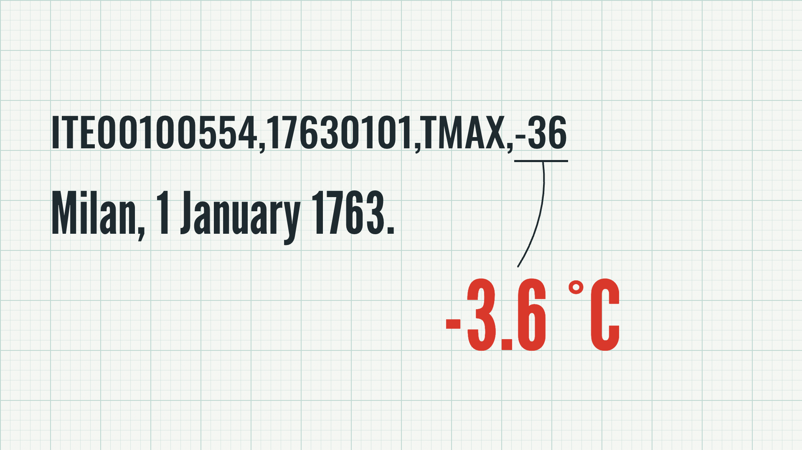
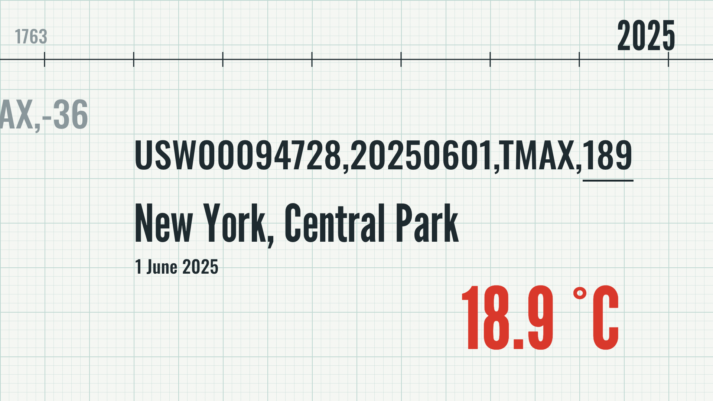
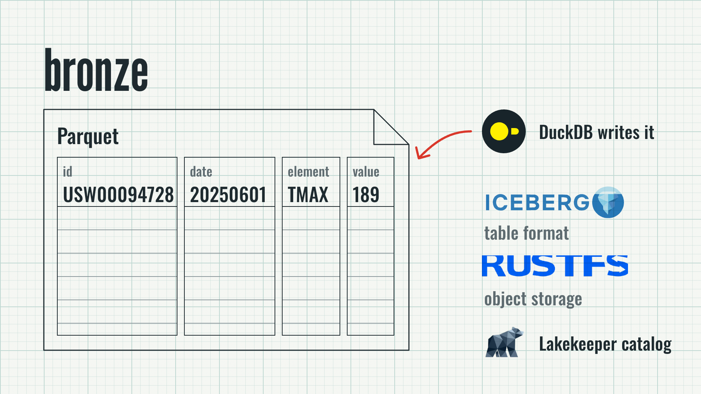
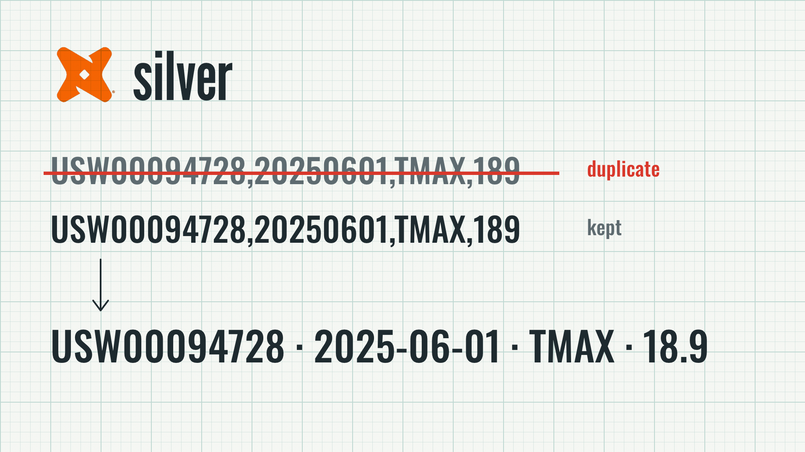
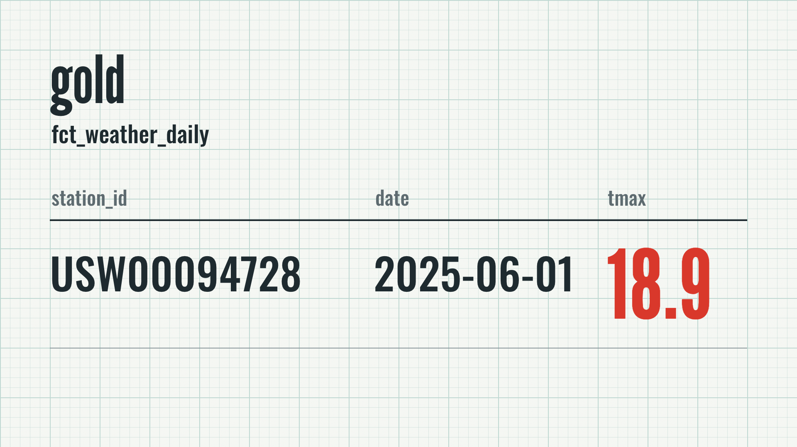
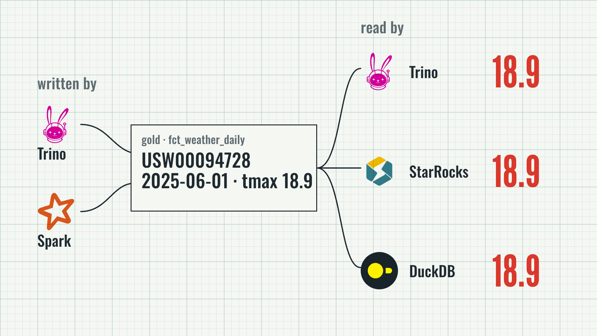
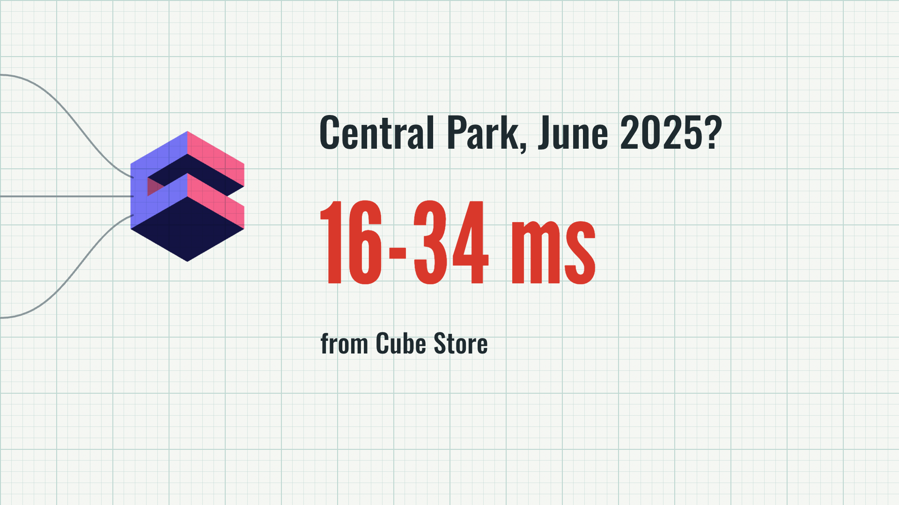
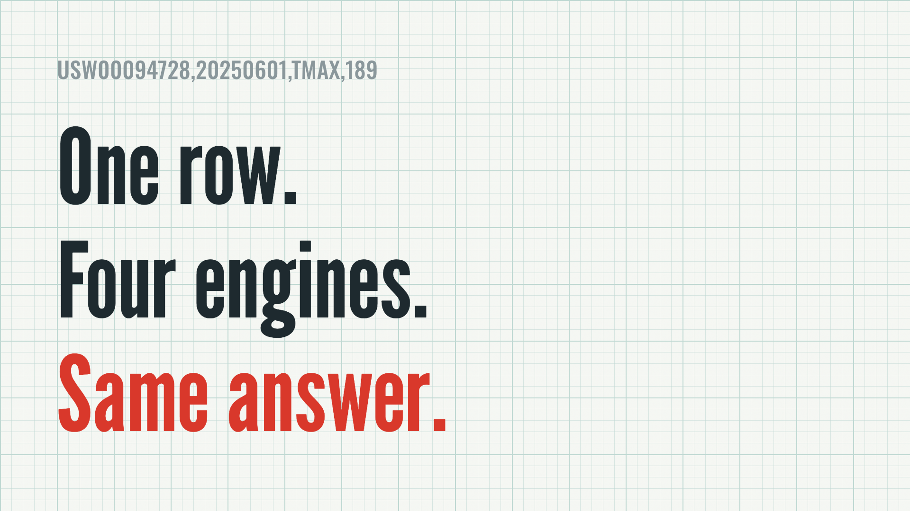
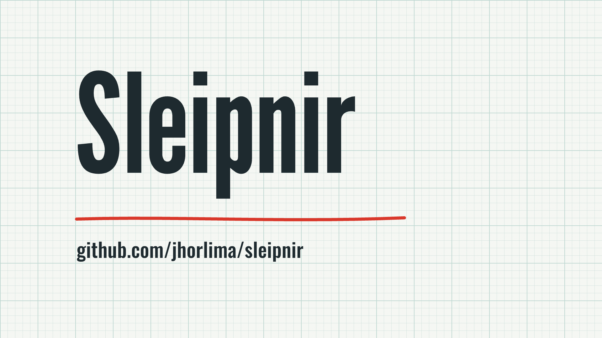

The 1763 Milan row is typed on the recorder paper; a pen leader ties -36 to "-3.6 °C", stamped in red. Sound: typing, pop.

The drum runs from 1763 to 2025; the Central Park row is typed and "18.9 °C" is stamped. This is the row the film follows. Sound: whoosh, typing, pop.

The row splits into the four column strips of a Parquet sheet. DuckDB writes it (red pen trace), Iceberg table format, RustFS object storage, Lakekeeper catalog, stamped in turn. Sound: pop per logo.

dbt stamped. The overlap reload brings the row in twice; the older copy is struck in red, the kept one becomes the silver row in °C. Sound: pop, click on the strike.

The kept row reflows into fct_weather_daily; "18.9" is stamped in the tmax column. Sound: pop.

Written by Trino and Spark; three pen traces carry the gold row to Trino, StarRocks and DuckDB, and each answers 18.9. Sound: pens down, pop per logo.

The traces converge on Cube; "Central Park, June 2025?" is typed and "16-34 ms" is stamped from Cube Store. Sound: key-press, the film's one impact.

"One row. Four engines. Same answer." stamped line by line under the faint row. Sound: pop per line.

"Sleipnir" stamped, underlined by the red pen, repo URL under it; held to the end. Sound: pop, then silence.